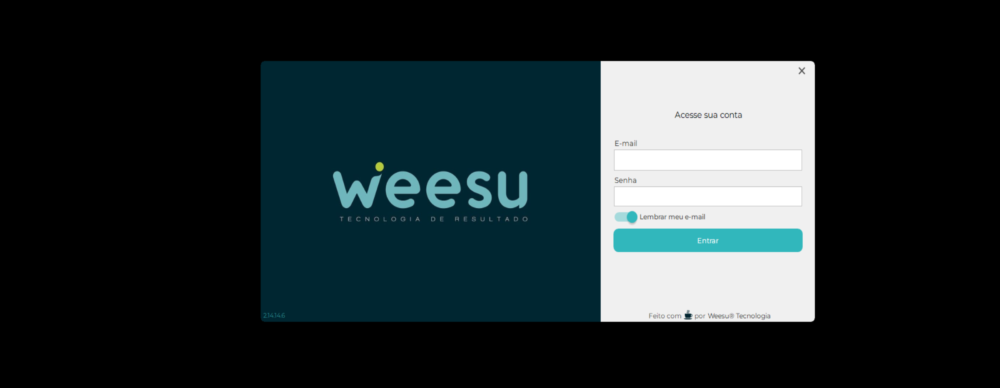
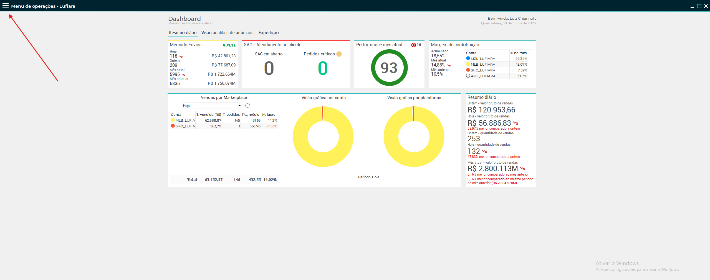
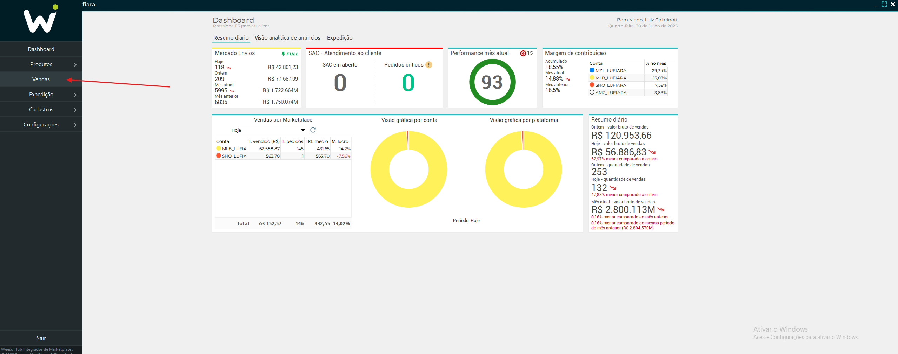
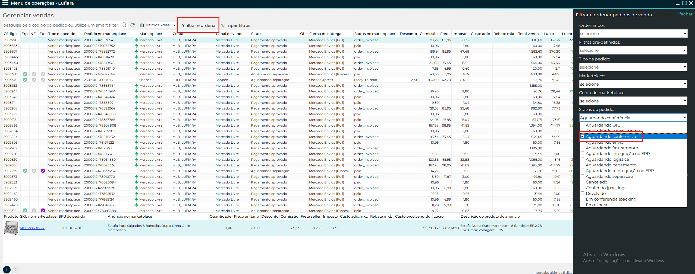
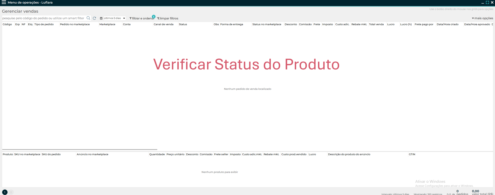
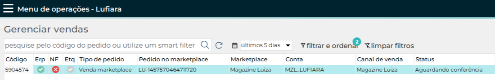
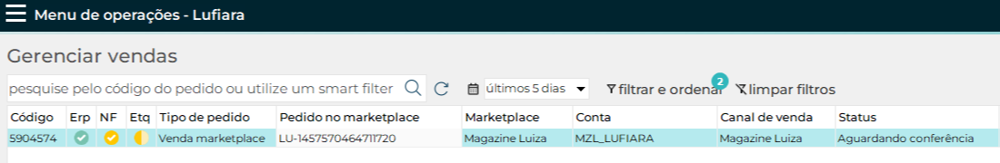

Sintoma: Após a separação, falha nas etiquetas de NF e postagem.
Causa provável: A Nota Fiscal pode não ter sido emitida corretamente ou não foi sincronizada com o sistema de geração de etiquetas. Também pode haver falha de comunicação entre o ERP, o módulo fiscal ou a transportadora.
Solução:
- Confirme se a NF foi gerada e autorizada no ERP.
- Acesse o módulo de expedição e tente reemitir a etiqueta manualmente.
- Caso a opção esteja indisponível ou ocorra erro, registre o número do pedido e envie para o suporte interno.
- Verifique também se o serviço de impressão (caso local) está ativo e sincronizado.
Passo a Passo Solução:
Na área de trabalho, abrir o aplicativo do HUB.
Fazer Login no seu usuário.
Selecionar os "3 pontos" no lado superior esquerdo.
Entrar na opção de vendas.
Aplicar os filtros necessários: "Aguardando conferência" e "Não exibir pedidos fulfillment".
Analisar o status que o pedido se encontra.
 Principais Status:
- Verde: Finalizado/Correto.
- Vermelho: Negado/Problema.
- Amarelo: Aprovado/Certo.
- Meia Amarela: Em Processamento.
Dica:Se o problema persistir em vários pedidos, pode ser um travamento na fila de integração. Tente reiniciar o serviço responsável ou aguarde o ciclo de atualização automática.
← Voltar para o manual